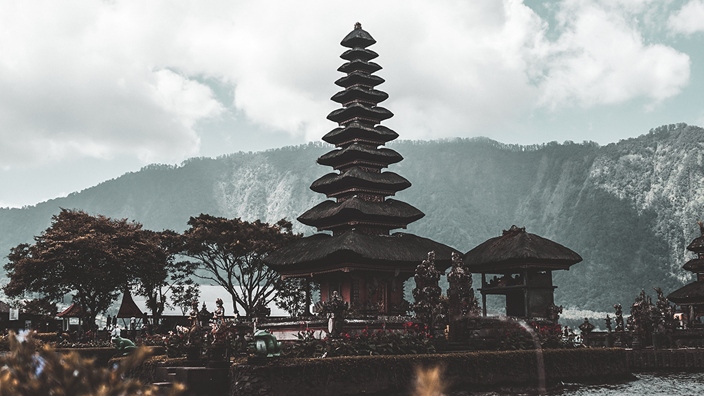
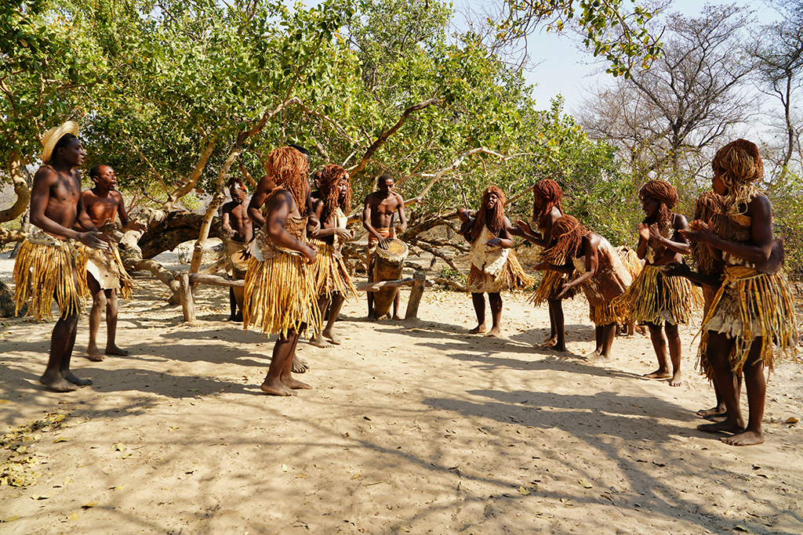
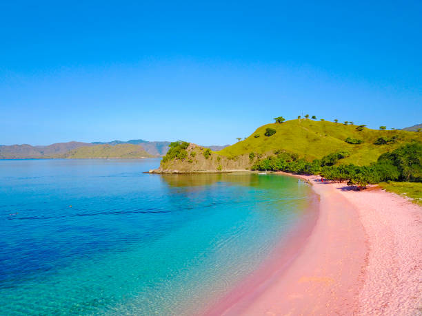
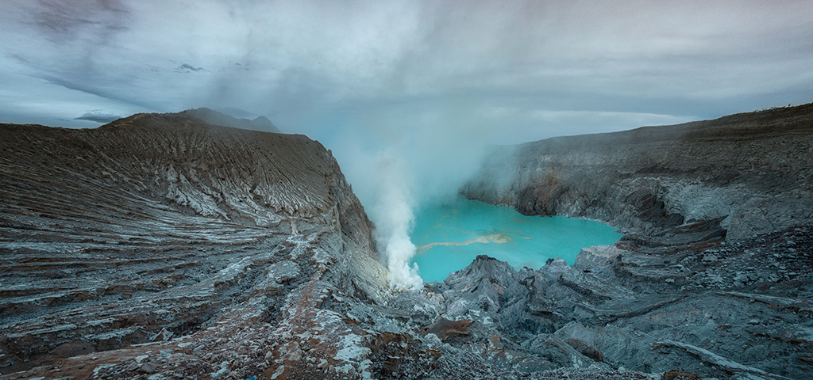
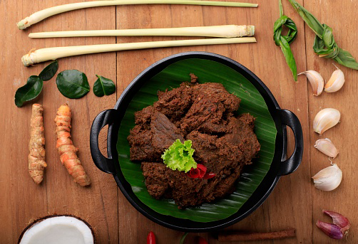
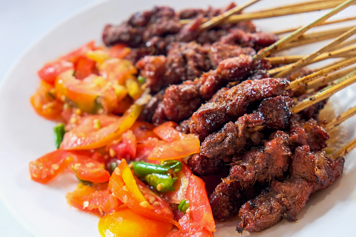
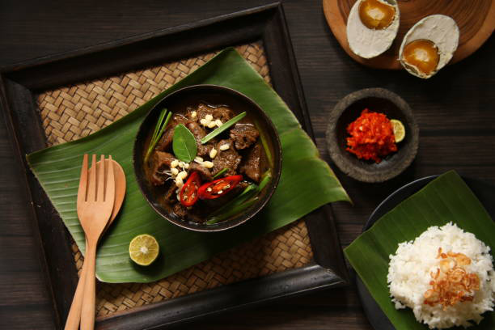

Kecak, also known as the Ramayana monkey chant, is performed by a circle of as many as 150 performers wearing Balinese sarongs around their waists, percussively chanting "chak" without music and moving their hands and arms. Held on a small cliff facing the sea. The sunset at Uluwatu Temple is also amazing
Iconic Lake Temple, Ulun Danu Berantan

North Bali, Indonesia
This stunning water temple sits on Lake Beratan is a major Hindu Shaivite temple in Bali, Indonesia. The water from the lake serves the entire region in the outflow area. The temple consists of four sacred buildings according to Hindu Trimurti beliefs.
Visit the Dani Tribe, Papua

Papua, Indonesia
Ritual small-scale warfare between rival villages was an integral part to traditional Dani culture. With elaborate instruments, much time spent preparing weapons and treating resulting injuries. Dani tribe women also expected to amputate part of their fingers when relatives die. Thid is the best place for anyone interested in unique Indonesian traditions and tribal heritage.
Best Place for Nature & Adventure Experiences
Pink Beach of Komodo

Komodo, Indonesia
There are just 7 pink beaches in the world and Indonesia has one of them. The sand appears pink because it is a mixture of white sand combined with red sand, formed from pieces of Foraminifera. The corals and underwater gardens of Pink Beach are fabulous as well.
Lake Ijen

Java, Indonesia
Active hikers and adventure travelers will want to climb Ijen Crater, a quiet but still active volcano, located on the border between Banyuwangi Regency and Bondowoso Regency of East Java, Indonesia. It is known for its blue fire, acidic crater lake, and labour-intensive sulfur mining.
Padar Island
Komodo, Indonesia
Padar Island is a small island located between Komodo and Rinca islands within Komodo archipelago. Out of the three islands in Komodo National Park, hikers and photographers will love this one. For beach lovers, Padar has both white, pink, and black sand beaches.
Must Try Indonesian Food
Rendang

Rendang from Sumatra
Rendang is one of the most popular Indonesian food from Padang, and is often praised as one of the world’s best foods. Its tender beef is cooked to perfection with flavorful herbs and spices. Because of its juicy texture and a perfect balance of spices, rendang is a favorite among tourists!
Sate Ayam

Sate Ayam from Java
Sate/satay is Indonesian skewered dish. Ayam is Indonesian for chicken. So, sate ayam is simply grilled chicken skewers marinated with spices and served with peanut sauce. This dish can be created using different types of meats, but chicken is the most popular form used. This Indonesian dish is a must-try when you get the chance to visit Indonesia!
Rawon

Rawon from Surabaya
Rawon, a delicious beef stew, is a famous dish from Surabaya, the pitch-black broth might seem unusual and uninviting. However, don’t let the aesthetic fool you. Kluwek is what gives a unique black color and a rich flavor to the stew. It is said that rawon was primarily a plebeian dish in the past, but its scrumptious favor soon became popular among the Indonesian royalty!